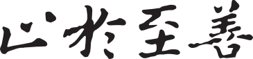

01
多智能体系统
恶意信息传播、风险熵建模、动态可信锚点与故障归因。
东南大学网络空间安全学院 2023 级本科生，主修密码科学与技术。研究兴趣聚焦多智能体系统安全、无人集群系统、密码学与隐私保护、通感一体化，并在紫金山实验室、移动通信国家重点实验室、江苏省网络与信息安全重点实验室、北京大学 FineLab 等平台开展科研训练。

目前关注高度互联系统中的安全性、可靠性与可解释诊断问题，尝试把图神经网络、密码协议分析、复杂网络建模和大语言模型结合到无人集群、多智能体系统与通感一体化场景中。
2022.08-2023.07，医学院，临床医学类（医学影像学）；
2023.08-2024.07，数学学院，理科试验班；
2024.08 至今，网络空间安全学院，密码科学与技术。
研究问题主要从“复杂系统如何被攻击、如何被诊断、如何被优化”展开，连接密码学安全性证明、图学习、无线感知与智能体协作机制。
恶意信息传播、风险熵建模、动态可信锚点与故障归因。
UAV/USV 协同网络、可靠性评估、复杂网络重要度排序。
HECC 认证密钥协商、eCK 敌手模型、节点捕获与临时密钥泄露。
WiFi BFM/CSI 数据建模、STGCN 定位、射频指纹身份识别。
以下按公开主页展示口径整理，保留已录用、已出版、在投和合作工作状态，便于访问者快速理解研究轨迹。
从密码协议设计到多智能体系统安全，再到无人集群可靠性和无线通感，项目之间共享一个核心问题：在开放、复杂、动态的系统中建立可信运行机制。
点击论文卡片可跳转到出版页。“†”为共同第一作者，“✉”为通讯作者。
IEEE Transactions on Vehicular Technology，已录用并出版。
DOI: 10.1109/TVT.2026.3658329
IEEE International Conference on Acoustics, Speech, and Signal Processing，已录用并出版。
DOI: 10.1109/ICASSP55912.2026.11463151
Findings of the Association for Computational Linguistics: ACL 2026，已录用并出版。
DOI: forthcoming
Proceedings of the 43rd International Conference on Machine Learning，已录用。
DOI: forthcoming
Proceedings of the 2026 International Conference on Multimedia Retrieval，已录用并出版。
DOI: 10.1145/3805622.3810789
Advanced Intelligent Computing Technology and Applications，已录用并出版。
DOI: 10.1007/978-981-96-9921-6_39
除科研训练外，也持续参与创新创业、信息安全竞赛和志愿服务，覆盖国家级、省级与校级成果。
欢迎围绕多智能体系统安全、无人集群可靠性、密码协议设计、无线通感与智能体工具编排等方向交流。